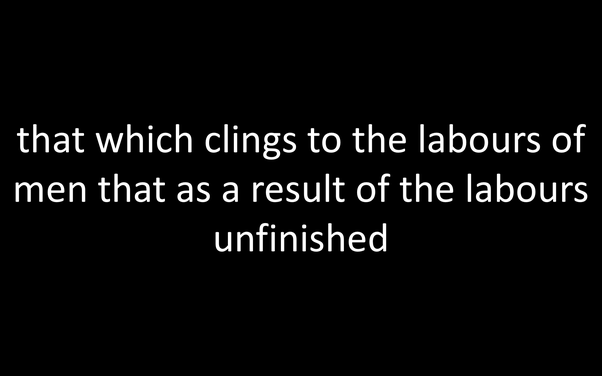

For mathematicians: What would be the most surprising new finding?
(EDIT: A lot of people are expressing shock in the comments regarding the statements in the list below. To be clear, once again, none of these things is known to be true, and in fact they are widely suspected to NOT be true. However they are, incredibly, also not known to be false.)
Ranked by a super-stun-o-meter of my own design, from least to most surprising:
- 2^{2^{163}}+1 is prime
- Some number greater than 1 shows up a billion times in Pascal’s triangle
- There exists a perfect cuboid: a box whose sides, face diagonals and main diagonal all have integer lengths
- P=NP
- \zeta(s)=0 where \zeta is Riemann’s zeta function and s is a complex number with real value greater than \frac{1}{2}
- e+\pi is rational
- The shortest string of bits that never shows up in the binary expansion of \sqrt{2} has length 2,304,000 and, when arranged in a 1920\times 1200 array, looks like this:

(To be clear, none of these is currently known to be impossible).
Originally posted on Quora: https://qr.ae/pFmQ3B